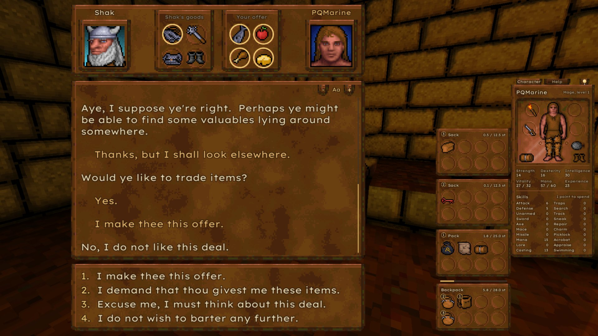
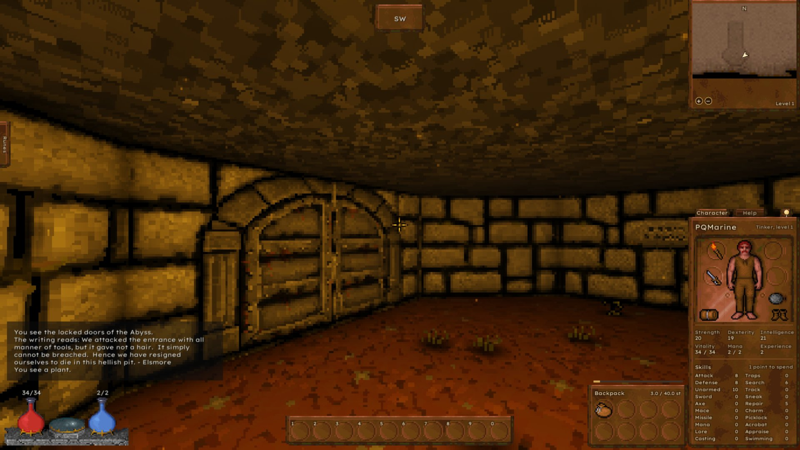
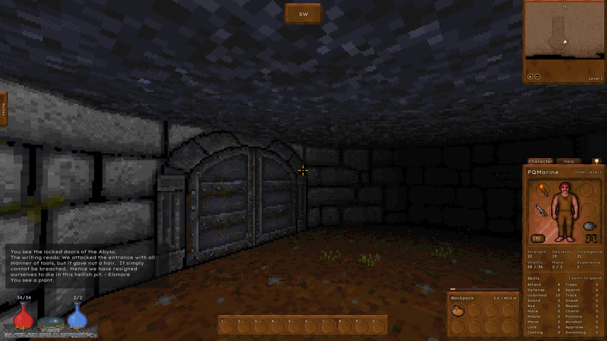
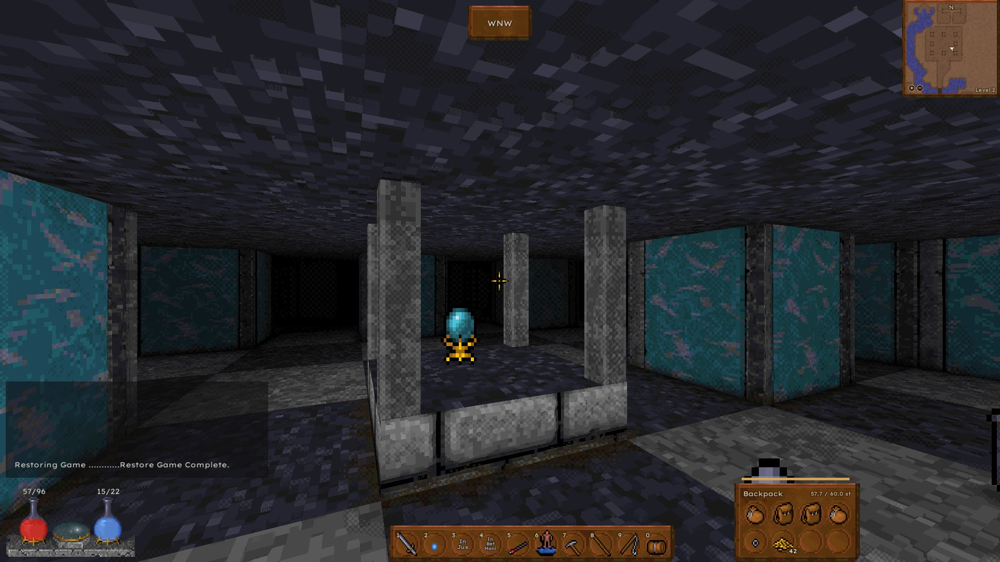
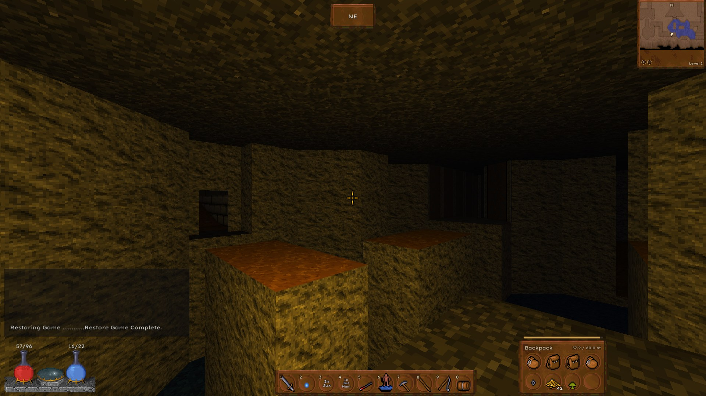
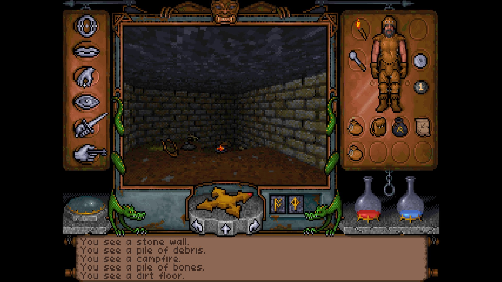
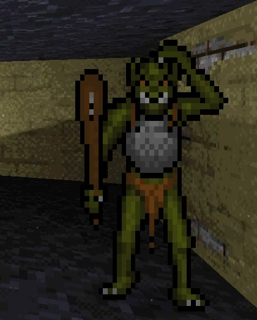
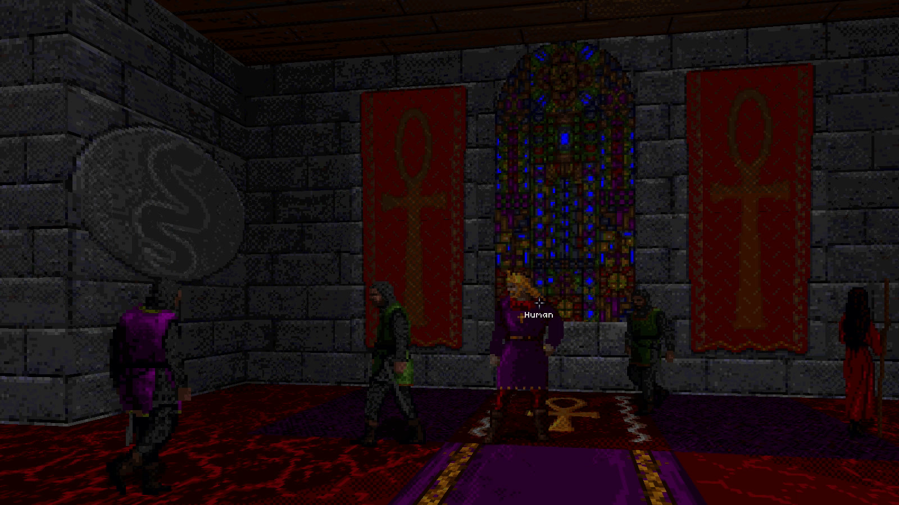
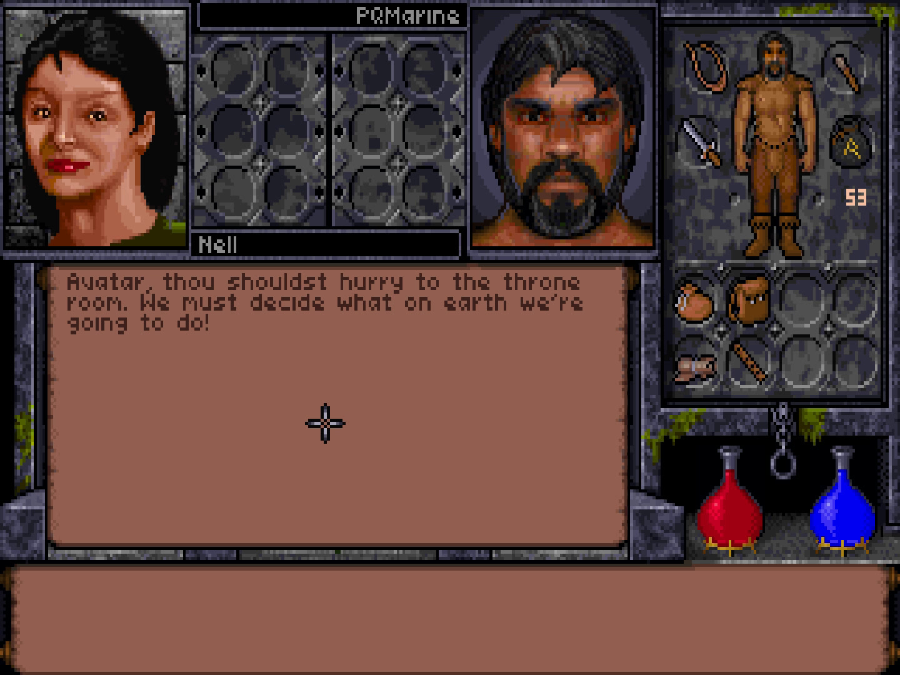

The whole game
Nine levels with their doors, locks, traps and triggers. Combat with the original's tables, magic with runes, creatures with their goals and group alarm, and conversations running the original bytecode, trading included.
Open source · Free · Windows & Linux
Ultima Underworld: The Stygian Abyss (1992), reimplemented in Unity and read straight from your own copy. Play it from character creation to the end, exactly as it was, or with a modern face.
Needs Ultima Underworld from GOG.com or Steam. No game data included.
Two lights, one dungeon
Drag across the picture. Palette computes light like the original, through its own shade and light tables. Remastered lights the same spot with Unity's URP: relief, glow, shadows and torch light, each switchable on its own.


Try it yourself
One room on level 2, three render modes, three steps of effects. Pick a combination, and press and hold the picture to see the same mode without effects.

Palette · Full Hold to compare with OffRemastered
Remastered lights the dungeon with URP. Its light burns warm like a torch. Too yellow for your taste? Turn it a little cooler, or all the way to neutral white.

Built against the original
The rules are read from the original's code and checked step by step against the game. Save games go both ways between Underworld Revisited and the 1992 original.

Nine levels with their doors, locks, traps and triggers. Combat with the original's tables, magic with runes, creatures with their goals and group alarm, and conversations running the original bytecode, trading included.
Reads and writes the original's SAVE1 to SAVE4. Carry a game
into DOSBox and back.
Ambient occlusion, grime, wall depth, glowing lava. Every pixel still a colour of the original's palette.
AdLib through an OPL2 emulation, General MIDI, a Roland MT-32 emulated by Munt, or recordings you supply.
In both schemes, with a pointer on the stick, glyphs for Xbox, PlayStation, Nintendo and Steam Deck, every button rebindable.

The world at the original's 320x200 resolution or up to 4x, while the interface stays crisp.
Optional fixes for bugs of 1992 that could cost you the game. Off, and it plays exactly as it did.
Switch the interface language at once. The game's own texts can be translated by language files.
An optional rules.json changes combat, magic, creatures, motion and trade.
Without it, the original's numbers.
Beside the view: stats with the hidden values, a live map, your notes, spells, mantras and the game's manual.
Original runs the original's motion code call by call, Smooth computes the same rules frame-rate independent, and Modern is an own character motor that slides along walls and keeps the view where you look, with the original's jumps, ledges and falls.
Windows 10 or newer, and a Linux build in every release since 0.3.0. The package brings its own runtime.
The intro, the dreams and the end sequence, played from the original's own cutscene files.
Pointer steering or WASD
One spot in the dungeon, four faces. The game switches between them from its menu while you play: the original's frame at 4:3, the frame widened, its pieces set free, or a modern scheme with free mouse look. A layout editor moves and sizes every part.
Press Tab
A help window opens beside the view while you play: your stats with the hidden values, a live map with your notes, every spell and mantra, the game's own manual, and the keys of the scheme you play with.
Make it yours
Every addition can be switched off, so the game plays as it did in 1992. And some go where few remakes go: the whole game can pull apart the colours a colour vision deficiency cannot tell apart.

Colour vision
The same spot with each filter: the view, the frame, the character and the flasks all follow. And when a poison turns the health flask green, it can carry a hatch as well.
Under the hood
A handful of debug keys show what the game keeps hidden: the tile under your feet, the object under the crosshair, the traps and triggers where they lie, the game's own variables. They are off by default; "Debug keys on" at the end of the keyboard tab under Controls switches them on.
Down in the Abyss
Preview since 0.13.0
Ultima Underworld II can already be tried: its menus, character creation and saves, Britannia with its game screen, map and conversations, and its creatures. Not yet the whole of its rules, but growing with every step.
Read the UW2 plan

The whole game playable, from character creation to the end sequence.
Free mouse look, WASD, bags, an action bar.
The first Linux build, and motion on the original's own code.
Depth and light, every pixel in the original's palette.
Every window by stick, glyphs for every pad.
General MIDI and the Roland MT-32.
Classic Modular, Classic Wide, the view-angle slider.
German interface and a translation kit.
An own character motor, true to the original's jumps and falls.
Ultima Underworld II as a preview.
Optional fixes for bugs of 1992 that could end the game.
Ambient light and a light colour for Remastered, and translations that follow French and Italian articles.
The Classic preset at 4:3 in the modern scheme, bags in bags that keep their things, and the colour help across the whole screen.
Ultima Underworld from Steam and the game's manual, map and cluebook in the help.
The help's document buttons in two rows on narrow screens, and Tremor's boulders no longer hanging in diagonal walls.
The Classic preset in narrow windows and behind conversations, and in the Ultima Underworld II preview the motion spells, active spells and a bobbing view.
A smooth Controls window, the game's palette from uwdump for painting new art, saves on bridges loading where they were made, and many fixes in the Ultima Underworld II preview.
Three steps
Install Ultima Underworld 1+2 from GOG.com or Ultima Underworld I and II from Steam. Both carry the same game files; other versions are not supported.
Grab the latest release for Windows (10+, 64-bit) or Linux (x86-64) and unpack it into a folder of its own.
Start UR.exe or UR.x86_64. It finds your GOG or Steam installation by itself, or asks once for the folder with game.gog or game.bin.
Nothing is written to your installation. Save games stay compatible with the original.
How this was made
"I have been a fan of Ultima Underworld ever since it came out in 1992. In 2012 I came across uw-formats.txt and thought: why not give it a try? In 2026, with the help of Claude, I picked it up again."
The code is written by Claude (Anthropic's AI model, via Claude Code). PQMarine decides what to build, tests every behaviour against the original game and confirms or rejects the results.